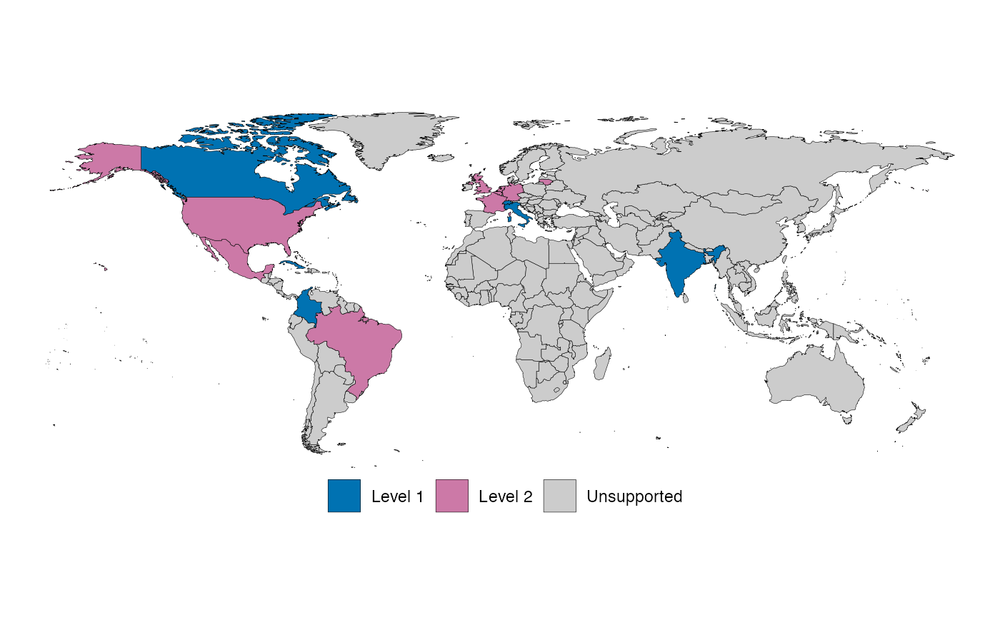

Supported countries and their support status
Source:vignettes/supported-countries.Rmd
supported-countries.RmdCountries with subnational data
This map shows what countries have level 1 and level 2 subregion data directly from an official source within that country. Please note other countries may be provided through our interface to external data sources, such as WHO() and JHU().

Status
Dataset status is shown in the table below. Please see our hosted page for up to date information for the CRAN status of data sets. Please note that due to our release schedule datasets may remain non-functional if broken using the CRAN version for some time even if fixed on GitHub. Also note that transient issues may affect our testing of datasets and so our checks may occasionally show a spurious failure.
| Origin | Method | GitHub status | CRAN status |
|---|---|---|---|
| Belgium | Belgium | working | |
| Brazil | Brazil | working | |
| Canada | Canada | working | |
| Colombia | Colombia | working | |
| Covid-19 Data Hub | Covid19DataHub | working | |
| Cuba | Cuba | working | |
| European Centre for Disease Control (ECDC) | ECDC | working | |
| European Commission’s Joint Research Centre (JRC) | JRC | working | |
| France | France | working | |
| Germany | Germany | working | |
| working | |||
| India | India | working | |
| Italy | Italy | working | |
| John Hopkins University (JHU) | JHU | working | |
| Lithuania | Lithuania | working | |
| Mexico | Mexico | working | |
| Netherlands | Netherlands | working | |
| South Africa | SouthAfrica | working | |
| Switzerland | Switzerland | working | |
| United Kingdom (UK) | UK | working | |
| United States of America (USA) | USA | working | |
| World Health Organisation (WHO) | WHO | working |